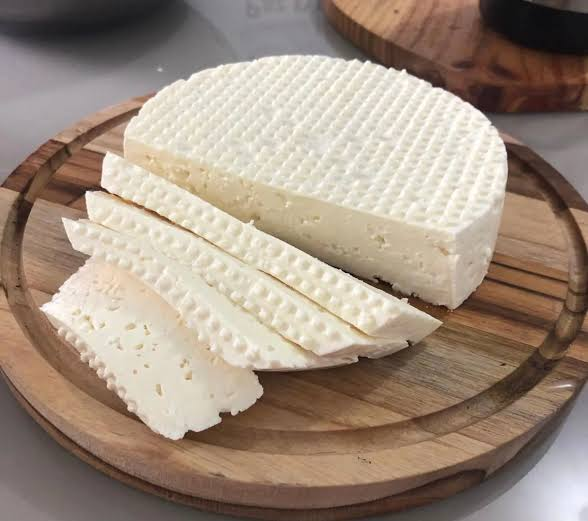
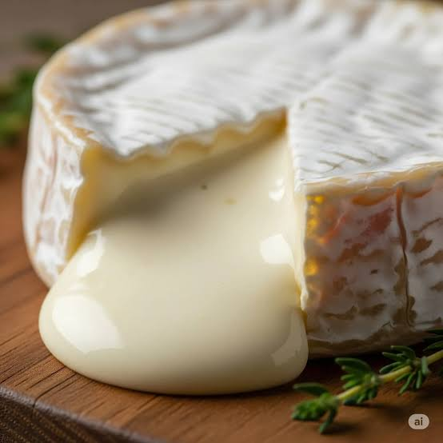
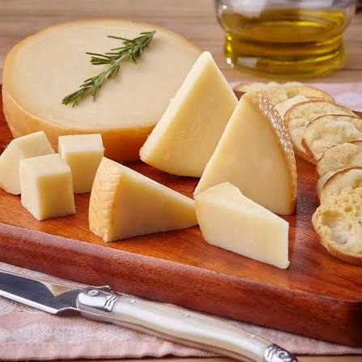
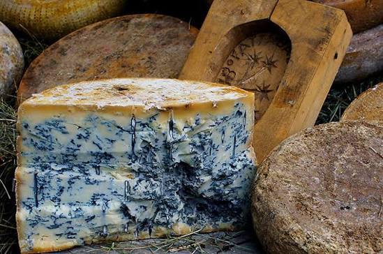
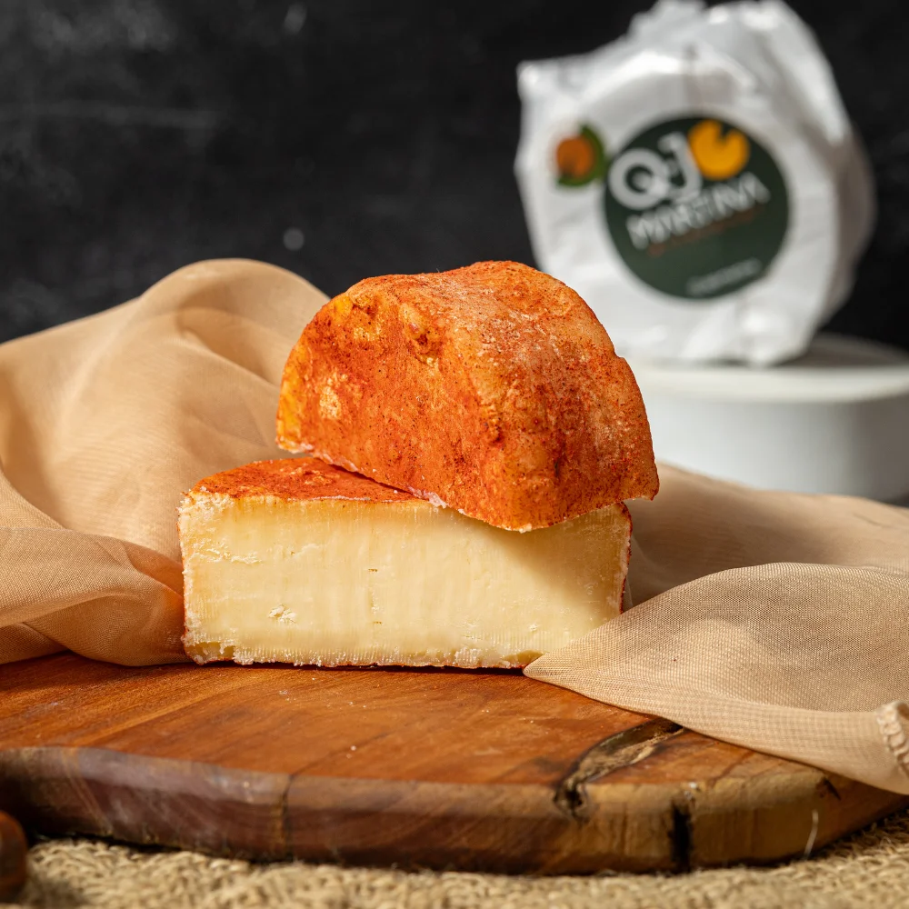

Preservando hoje para existirem amanhã.

Não passam por maturação, têm alto teor de umidade e sabor suave.

Possuem casca aveludada e interior extremamente cremoso que derrete na boca.

São compactos e costumam ter longos períodos de maturação, apresentando sabor mais intenso e cristais de tirosina (aqueles pontinhos crocantes).

Contêm fungos do gênero Penicillium que criam veios azulados e sabor forte e picante.

Maturados com soluções salinas, cerveja ou aguardente, possuem casca alaranjada e aroma forte.